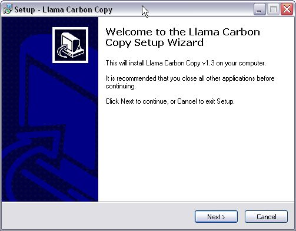
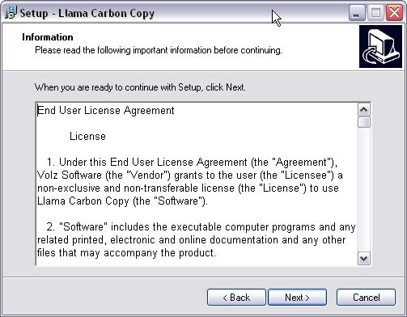
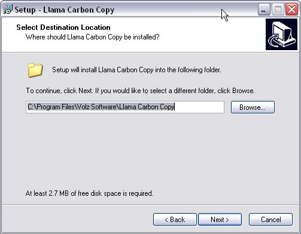
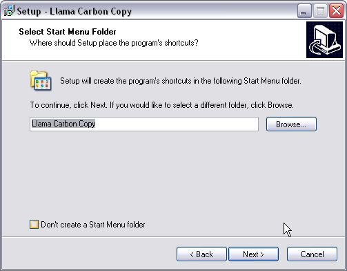
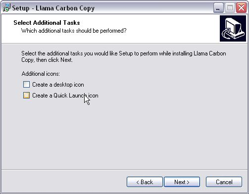
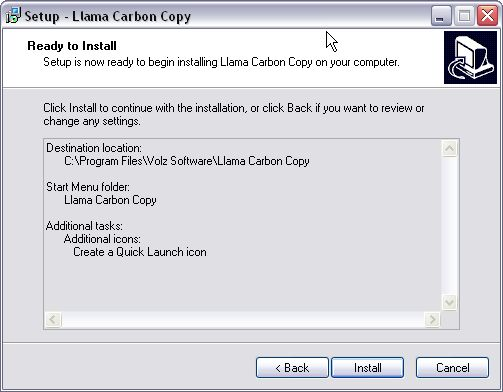
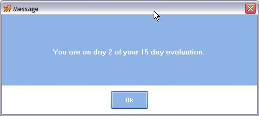
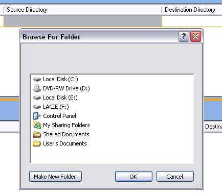
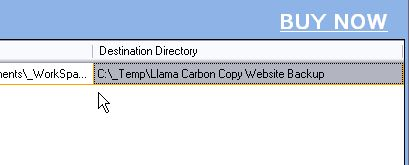
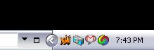

Quick Start Guide
This quick start guide is meant to speed you to efficiently using Llama Carbon Copy. It covers the basics of using the software
to save you time and protect your work.
Contents
Download the installation here. Double clicked on it to run it, the installation will
present the first window:

To continue the installation, click on the Next button.
You will be presented with the licensing agreement.

Please read the license agreement and if you agree, click Next.
Next, you will be given the choice of where to install the software. We recommend the default location in the Program Files directory.

Please make your selections and then click Next.
Next, the installation will ask where you want the start menu entries put. Optionally, you can avoid the creation of start menu entries by
click the "Don't create a Start Menu folder" check box.

Please make your selections and then click Next.
You are then given the option of creating a desktop or quick launch icon.

Please make your selections and then click Next.
Next, the installation will confirm that you are ready to install Llama Carbon Copy.

Please click Install.
Finally, the installation will finish and ask you to close it. Llama Carbon Copy will run unless you
uncheck the "Launch Llama Carbon Copy" check box.

Please click Finish.
That concludes the installation of Llama Carbon Copy onto your computer.
Open Llama Carbon Copy by navigating to it in the Start Menu, or by clicking on the icon on your desktop (pictured above).
When the program opens it will tell you how many days you have left on your trial license. It will appears as follows:

Click Ok to continue to the program.
You should be presented with the following screen:

To tell Llama Carbon Copy which folder you want to watch, you have to create a new job. You can do this by clicking on
the New button on the top left hand side of the screen. Once you have done that, you will be presented with a screen
that appears as follows:

Type the name of the job you want to create into the field.
Next you are required to identify the original (source) directory that Llama Carbon Copy will watch for changes.
If you press tab from where you entered the name or simply click on the Source Directory field you will be
able to easily select the directory you want to watch. Here's what you'll see:

Find the directory you want Llama Carbon Copy to watch, select it and click Ok.
Proceed through the same steps to select the copy (destination) directory. Click on the Copy button, and you will be presented with the
folder selection dialog once again. Find your folder and click Ok.

Once you have selected both original and copy directories the job will be saved automatically.
When you save a job, Llama Carbon Copy will automatically start watching that folder. No further effort is required.
Final Note
Llama Carbon Copy is designed to stay out of your way while you work. If you minimize the Llama Carbon Copy main
window, it will disappear from your taskbar. This is by design, and is an attempt to keep from cluttering up task
bar real estate. At any time you can get the Llama Carbon Copy main window back by clicking on the system tray icon
located in the bottom right hand corner of your screen. It is the two orange llamas in the picture below:

Llama Carbon Copy installs, by default, as a trial version. The trial version allows the user to test out the
product for 15 days. During that time period at any time, the license key can be entered into the program altering
the license to be permanent (extending forever).
When you purchase Llama Carbon Copy an email with your license key will be sent to you. In order to enter
this licence you go to the Help menu and select the License option.
The license screen appears as follows:

Once you receive your license key
cut and paste it exactly as it appears into the license key field, as indicated below:

Click Ok to complete the licensing of Llama Carbon Copy. A prompt will explicitly tell you
whether your license key has been excepted or not.
Welcome to the Llama Carbon Copy family. If you have any trouble, please contact me
here.
 Try Llama Carbon Copy out for free by downloading our 15 day trial version.
Try Llama Carbon Copy out for free by downloading our 15 day trial version.
 Llama Carbon Copy
Llama Carbon Copy